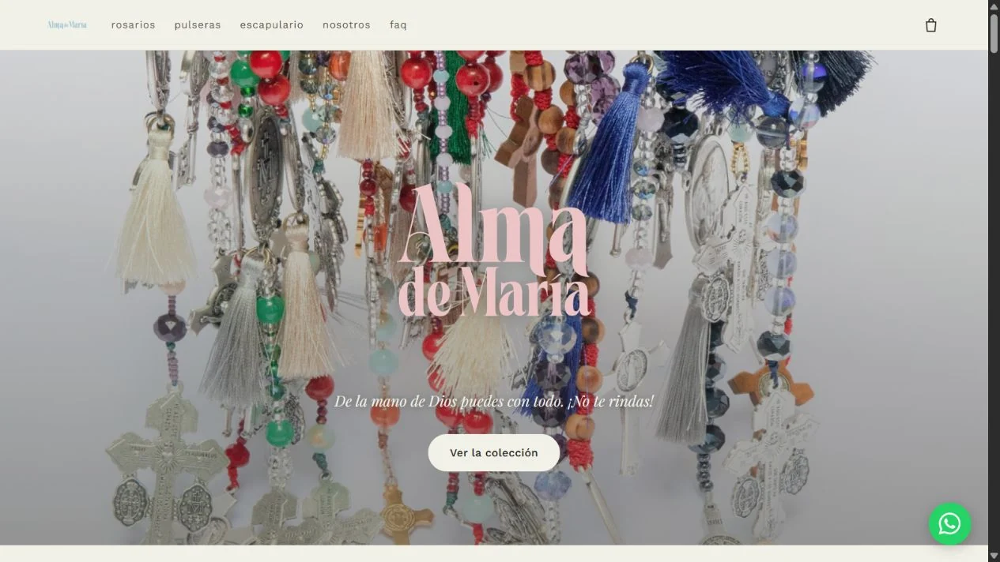

Software & Web2026
Alma de María
A digital home for my family's handcrafted jewellery brand in Colombia.
See it in action
Project preview
A view of the working project. Open the demo to explore it.
The challenge
Bring an artisan jewellery catalog online while keeping orders connected to the brand’s WhatsApp sales channel.
The idea
A calm storefront with detailed product pages, a persistent cart and a guided route from browsing to an order conversation.
The build
HTML, CSS and JavaScript connect product variants, USD/COP prices and cart persistence. A three-step checkout prepares the WhatsApp order message.
What came out of it
A multi-page storefront with a browsable jewellery catalog. Payment and shipping are confirmed through WhatsApp; currency conversion uses a fixed reference rate.
More technical detail in the project repository. Implementation notes ↗